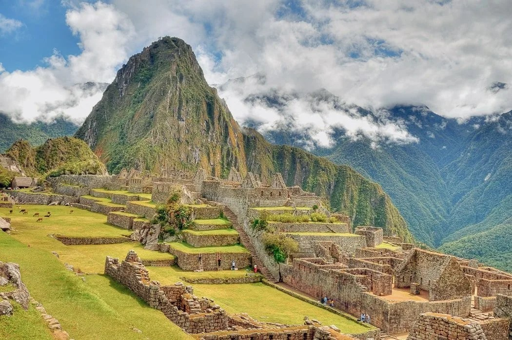

Eiffel Tower
The Eiffel Tower was built in Paris for the 1889 World's Fair. Its iron framework and distinctive shape turned it into one of the most recognizable symbols of France.
Location — Paris, France

Discover the stories behind places recognized across the globe.
Explore the landmarks ↓Landmarks are structures or locations that become closely connected with a country's identity. They may be admired because of their architecture, history, cultural meaning, or impressive scale.
Visiting a landmark gives travelers an opportunity to learn beyond photographs. The surrounding streets, landscapes, museums, and communities can reveal how the site continues to influence people today.
The Eiffel Tower was built in Paris for the 1889 World's Fair. Its iron framework and distinctive shape turned it into one of the most recognizable symbols of France.
Location — Paris, France
The Great Wall consists of fortifications built across northern China during different historical periods. Its paths cross mountains, grasslands, and other dramatic landscapes.
Category — Historic fortification system
The Taj Mahal is a white marble mausoleum celebrated for its symmetry, detailed decoration, gardens, and reflecting pool. It was commissioned by Emperor Shah Jahan.
Location — Agra, India
Famous sites receive many visitors. Careful behavior helps protect the location and creates a better experience for travelers and local communities.
Landmarks can be affected by weather, pollution, natural disasters, conflict, and heavy tourism. Conservation teams study materials and repair damage using carefully planned methods.
Visitors also contribute to preservation by respecting rules and supporting responsible tourism. Even simple actions can help important places remain available to future generations.
Travel principleTake photographs, learn deeply, and leave the place unharmed.